vLLM[1] has become a widely used open-source engine for serving large language models[2]. As deployments increasingly rely on serverless and elastic-scaling architectures, the time required to bring a new vLLM worker into a serving state — its cold start latency — directly affects request tail latency and provisioning cost. Despite this, the engine startup phase of vLLM has not been systematically measured.
Without a clean characterization of where startup time goes, every release becomes opaque, and discussions of startup performance reduce to anecdote[3]. In our MLSys 2026 paper, Breaking the Ice: Analyzing Cold Start Latency in vLLM, we instrument vLLM end-to-end, decompose startup into well-defined phases, and identify which components dominate the latency.
This post summarizes the main findings of the paper for readers operating vLLM in production or building serverless inference platforms. We omit some experimental detail in favor of clarity; for the full methodology, ablations, and validation, the paper itself is the reference.
01Startup latency variability across vLLM versions
To motivate the study, we first measured vLLM startup latency across the last nine major releases on identical hardware. We used OPT-6.7B[4] as the model and an NVIDIA H100 GPU[5] as the accelerator, holding all other variables constant.
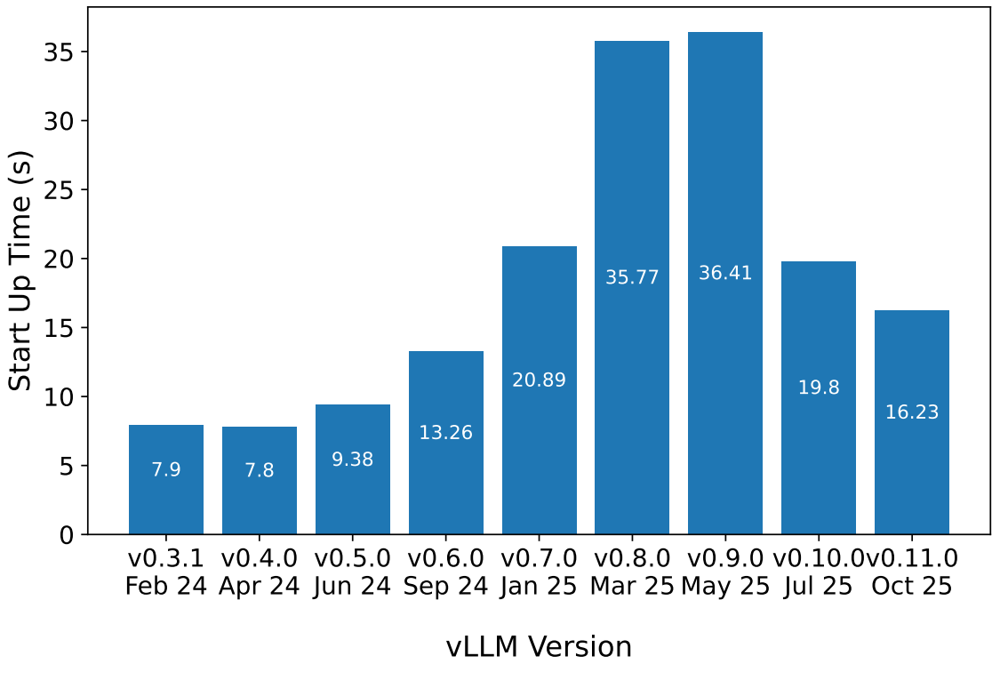
The measurements span an approximately 4× range. Startup time was roughly 8 seconds on v0.3, increased to 36 seconds on v0.8 and v0.9, and decreased to about 16 seconds on v0.11. The increase coincides with two major architectural changes in vLLM: the introduction of the V1 API and the integration of torch.compile[6]. Recent releases have begun to recover some of this regression, although startup latency remains substantially higher than two years ago.
This level of variability across releases motivates a more principled characterization. To improve startup latency systematically, we need a clear breakdown of where time is actually spent.
02A six-step decomposition of startup
We instrumented vLLM v0.10.1.1 and decomposed the engine startup process into six functional phases. Each phase corresponds to a distinct operation that the engine must perform before it can serve requests. Figure 2 shows a representative startup of Llama-3.2-3B[7] on an H100, with each phase contributing to the total.
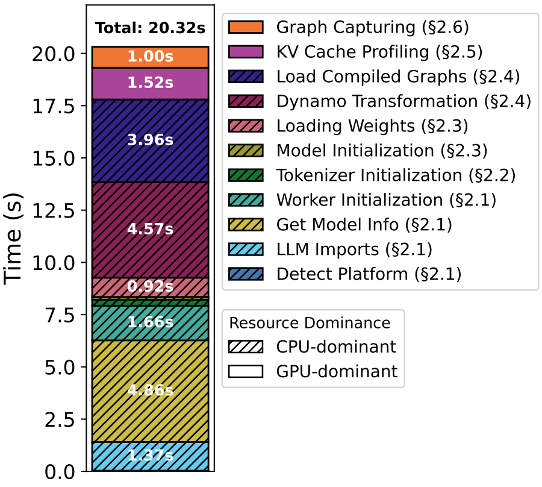
The decomposition is informative for two reasons. First, it identifies the operations whose cost dominates startup latency, and therefore the most productive targets for optimization. Second, each phase scales with a small set of well-defined inputs. Identifying the relevant input for a given phase makes it possible to predict that phase's latency for a new model or hardware configuration without re-running the full benchmark — a property we exploit later when we build an analytical predictor.
We describe each of the six phases below. For each one, we explain what it does, show the empirical relationship between the phase's latency and its dependent input, and summarize the result in a parameter callout.
01Framework Bootstrap CPU
This phase covers everything that must happen before any model-specific work can begin: the host process starts the Python interpreter, vLLM detects the platform (CUDA version, architecture, available accelerators), imports its full dependency graph (PyTorch, Transformers, vLLM modules and registered plugins), parses the model's config.json to determine architecture metadata, and spawns the worker process that will own the GPU.
The cost is dominated by Python-level overhead. vLLM's codebase has grown to roughly 280K lines of Python in v0.10, and many of its dependencies are themselves large. Cold imports of PyTorch alone account for a non-trivial fraction of this phase.
02Tokenizer Initialization CPU
The model's tokenizer is loaded into memory: vocabulary, byte-level merge rules, special-token metadata, and any associated configuration. For most models this is a comparatively fast operation, but tokenizers vary considerably in size. A Llama-3 tokenizer with a 128K vocabulary is several times larger to load than an OPT tokenizer with a 50K vocabulary, and that difference shows up directly in this phase.
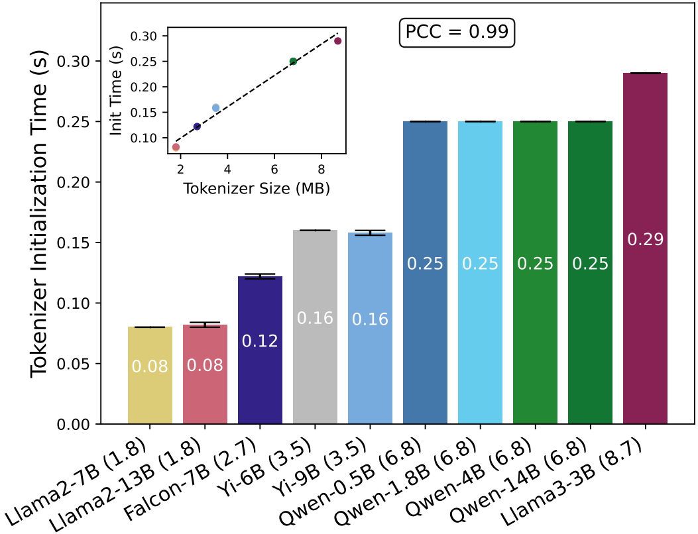
03Model Loading CPU
The model architecture is constructed in memory according to the parsed configuration, and the pretrained weights are read from disk and copied into GPU memory. The cost here is dominated by I/O and host-to-device memory transfers rather than by computation.
The relevant input is not the parameter count alone but the total size of the weight payload, which depends on the precision used. A 7B-parameter model in FP16 contributes roughly 14 GB of weights to load; the same model in FP8 halves that, and quantized variants reduce it further.
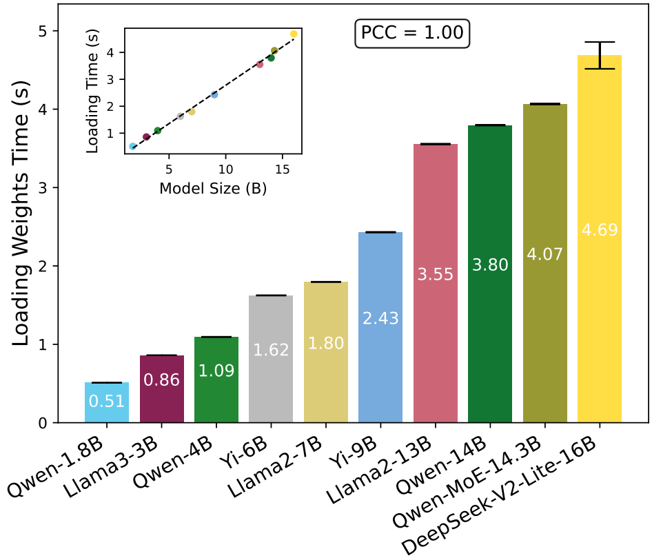
04Torch Compilation CPU
In the V1 vLLM architecture, the model is compiled with torch.compile before serving begins. The phase has two sub-components: TorchDynamo[8] traces the model's Python execution into an intermediate computational graph, and TorchInductor lowers that graph into optimized CUDA kernels.
The cost is driven by the number of operations in the traced graph, which scales with the depth of the model (number of layers) and the complexity of each transformer block. We found that the size of the generated compiled graphs is a good proxy for the compilation cost.
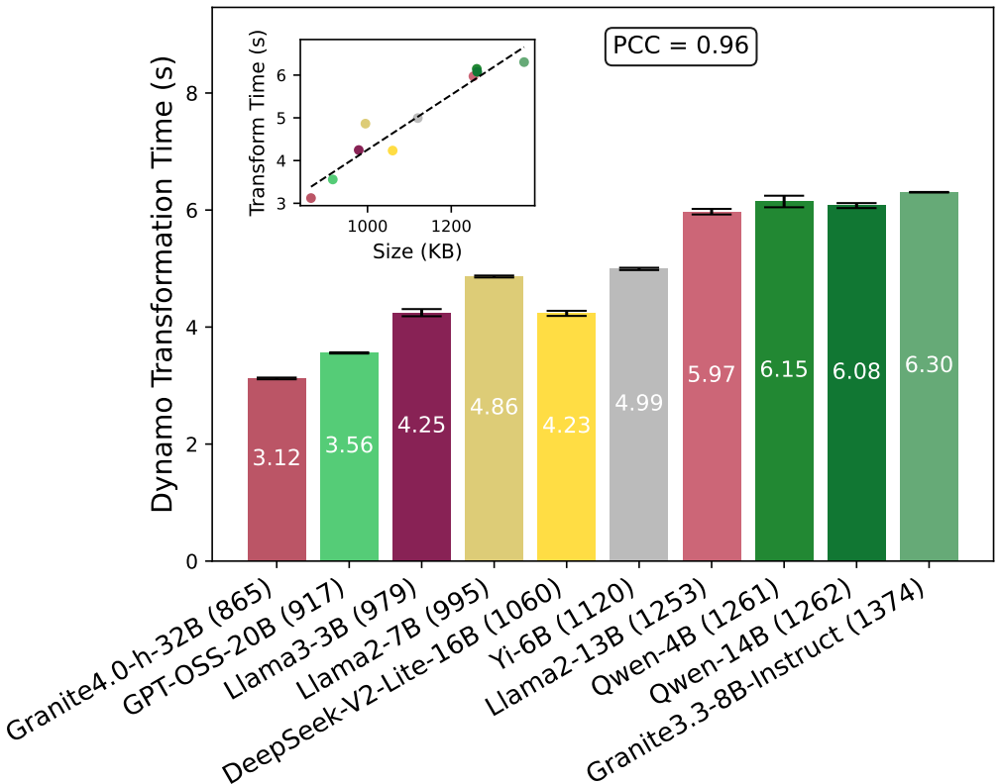
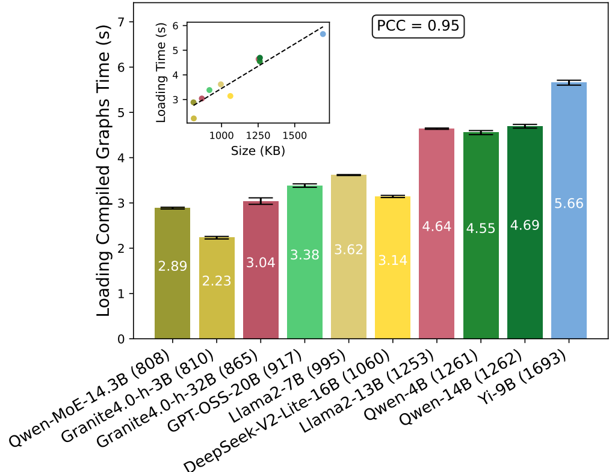
05KV Cache Profiling GPU
This is the first phase that uses the GPU substantively. A synthetic forward pass at the maximum supported sequence length is executed, and peak GPU memory consumption is measured. The remaining GPU memory is then partitioned and allocated to the KV cache. The profiling pass is needed because the precise memory footprint of a model under load is difficult to predict statically.
For dense models, the cost scales linearly with parameter count. Mixture-of-experts (MoE) models deviate slightly: dynamic expert routing means that different experts are activated on different forward passes, which introduces variance in the measured peak.
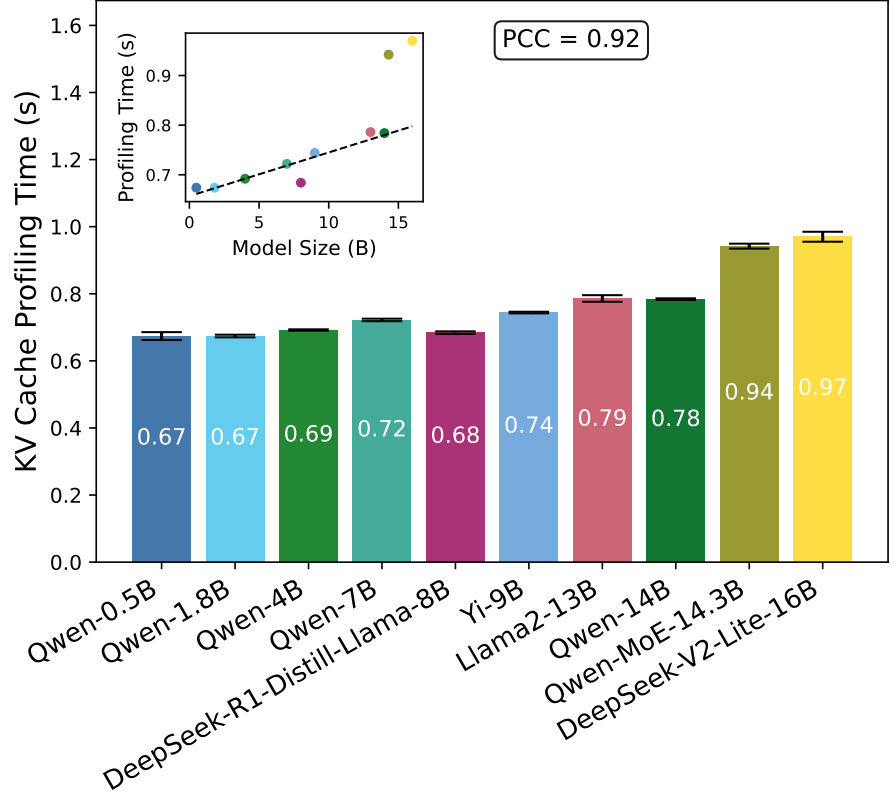
06CUDA Graph Capturing GPU
For each batch size in vLLM's configured set, the inference kernel sequence is recorded into a reusable CUDA graph[9]. At inference time, replaying these graphs eliminates per-step kernel-launch overhead, which is a meaningful contribution to latency for small models and batch sizes.
The cost compounds along two axes: each capture executes a forward pass through the full model (so larger models cost more per capture), and one capture is performed per batch size in the set (so more batch sizes cost more in total). vLLM's default configuration captures graphs across a wide range of batch sizes; in deployments where only a subset is actually used at runtime, trimming the set is a straightforward way to reduce capture time.
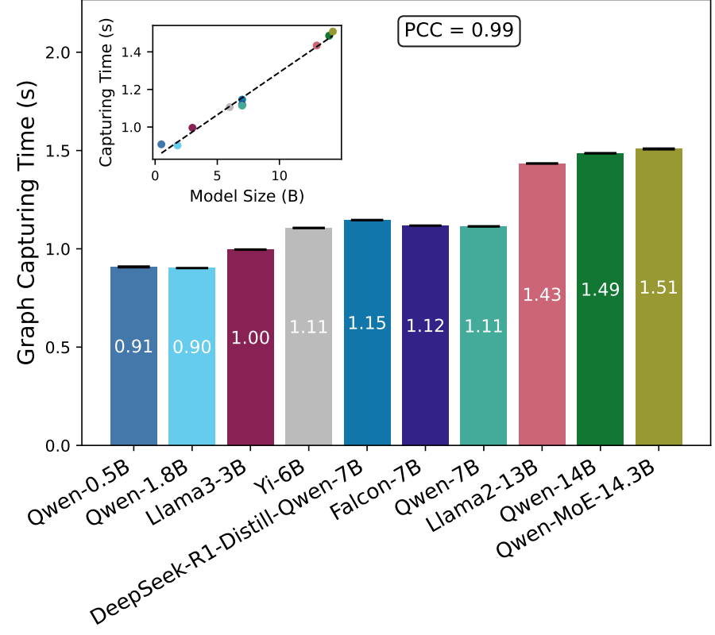
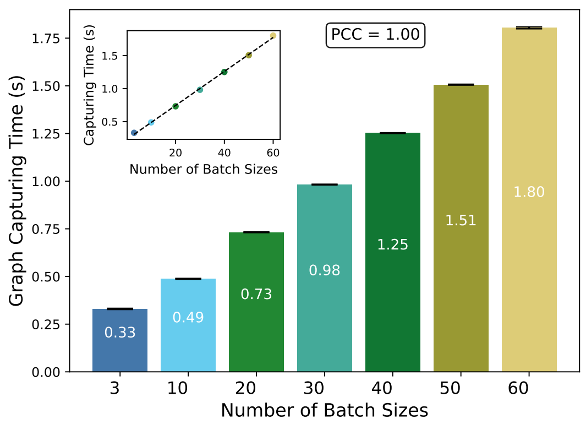
Across the models in our evaluation, the per-phase relationships shown in Figures 3-10 all exhibit clean linear behavior, with Pearson correlation coefficients between 0.92 and 1.00. This indicates that startup behavior is the sum of well-behaved, predictable components rather than an opaque process — a property we exploit later when we build an analytical predictor.
Of the six phases, four execute primarily on the CPU. The remaining two — KV cache profiling and CUDA graph capturing — run on the GPU but account for a minority of the total startup time on the models we tested. This breakdown sets up the central empirical question of the paper: if four of the six phases are CPU-bound, how does the choice of host CPU compare with the choice of GPU in determining startup latency?
03CPU and GPU sensitivity
The phase decomposition suggests that startup latency should be more sensitive to CPU choice than to GPU choice. To test this empirically, we performed two controlled experiments.
In the first, we held the CPU constant and replaced the H100 GPU with an L40S[10]. The H100 has approximately twice the throughput of the L40S on most workloads, so a naïve expectation is that startup should be noticeably faster on the H100.
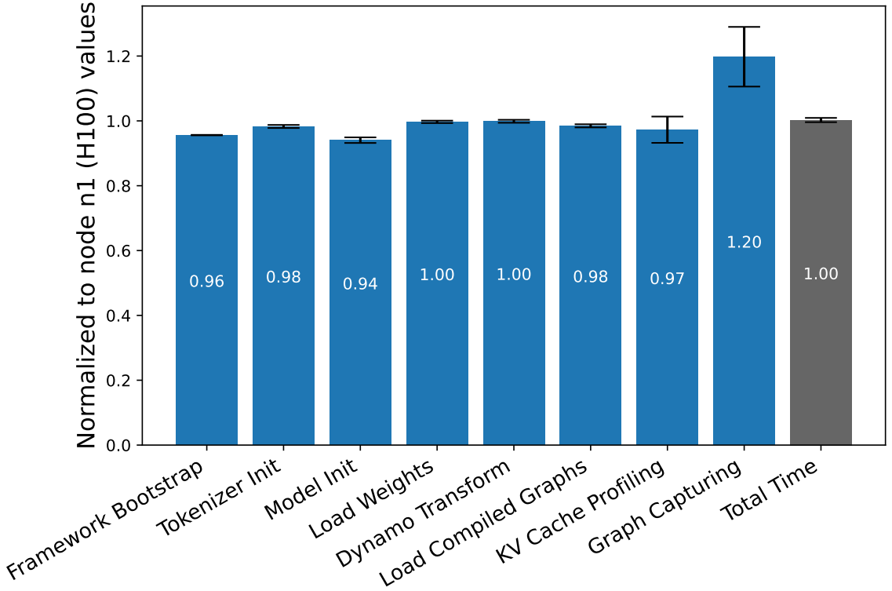
The data show otherwise. Most phases run within a few percent of each other on the two GPUs. CUDA graph capture — the only phase dominated by forward-pass execution — exhibits a 1.2× advantage on the H100. The total startup time differs by less than one percent across the two configurations.
In the second experiment, we held the GPU constant (H100) and replaced the CPU. We compared a node with an AMD EPYC 9354 against a node with an Intel Xeon Platinum 8568Y+.
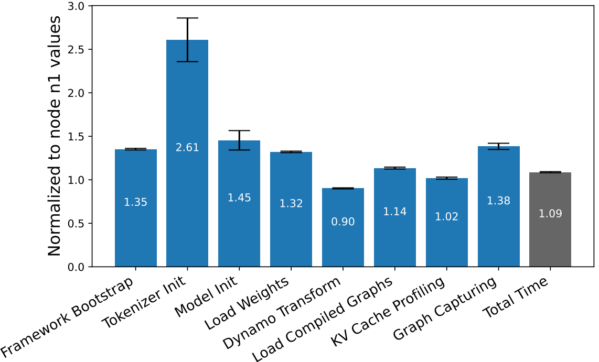
The differences across CPUs are substantially larger and not uniform in direction. Tokenizer initialization is 2.6× slower on the Intel system, while Dynamo transformation is faster. The result is not that one CPU outperforms the other in general; rather, it is that startup latency is genuinely sensitive to CPU choice, in clear contrast to its near-insensitivity to GPU choice.
CPU choice, rather than GPU choice, is the primary hardware determinant of vLLM cold-start latency. Despite roughly 2× the theoretical throughput of the L40S, the H100 yields essentially no improvement in total startup time. CPU substitutions, by contrast, can shift individual phases by a factor of two or more.
04CPU core utilization during startup
Given that startup is CPU-dominated, a natural follow-up question is whether the work is parallelized across the available cores. To answer this, we sampled per-core CPU utilization at 100 ms intervals throughout the full startup process.
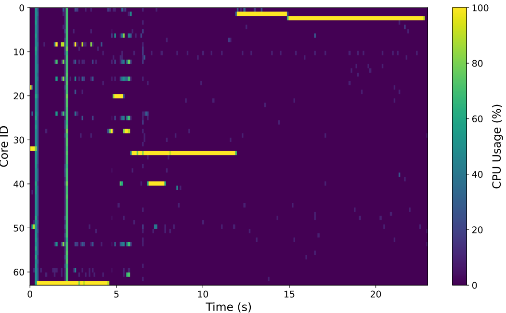
The pattern is consistent across runs: at any given moment, exactly one core is fully utilized, and concurrent saturation of two or more cores is uncommon. The startup process is therefore largely a sequence of single-threaded Python operations — module imports, dependency resolution, graph tracing, and file I/O — that the implementation has not yet parallelized.
05A predictive model of startup latency
Because each phase scales linearly with one or two well-defined inputs (parameter count, tokenizer size, compiled graph size, or batch-size set), the startup process admits a simple analytical model. We fit one linear regression per phase, parameterized by that phase's natural inputs, and sum the per-phase predictions to estimate total startup time.
We validated the resulting model on five models held out from the training set: Falcon-11B, Mistral-7B, Gemma-7B, Llama-3-3B, and Qwen-7B. The mean squared error across the held-out set is 2.42 seconds, and the largest single prediction error is 2.08 seconds. We additionally evaluated the model on vLLM v0.11, which was released after our main experiments; the MSE on v0.11 is 2.62 seconds. This indicates that the parameterization remains valid across releases, and that updating the predictor for a new release reduces to refitting the per-phase coefficients rather than redesigning the model.
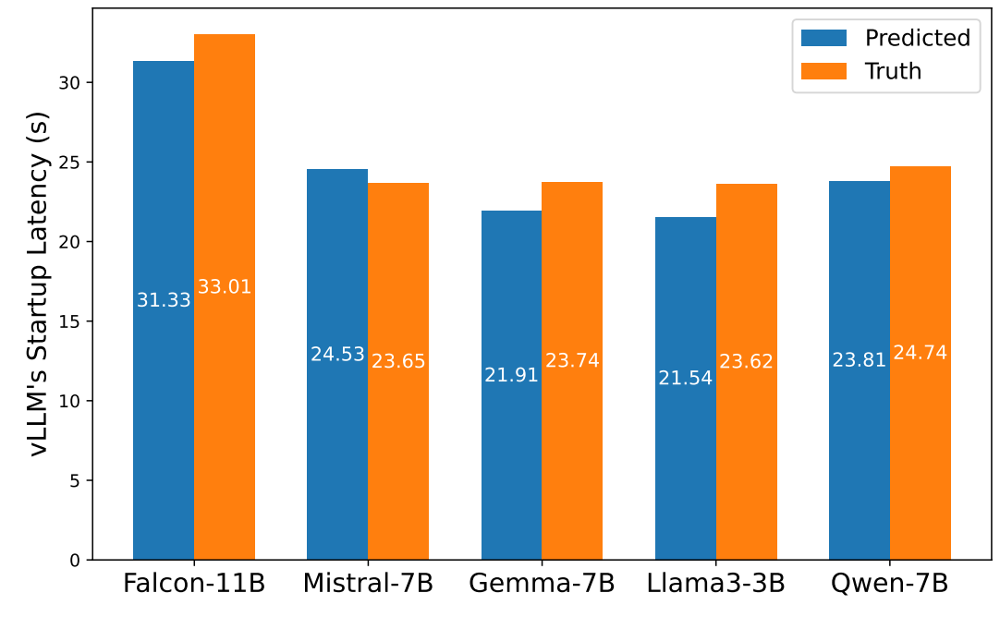
This level of accuracy is sufficient for autoscaler decision-making in serverless deployments, where startup-time estimates inform pre-warming, scale-out, and de-provisioning policies. Because the predictor is decomposed by phase and white-box in form, it is also useful diagnostically: deviations between predicted and observed phase latencies localize the cause of regressions to specific components of the engine.
References
- Kwon, W., Li, Z., Zhuang, S., et al. Efficient Memory Management for Large Language Model Serving with PagedAttention. SOSP 2023.
- Nar, F. E., Pereira, G., Tang, Y., Shaw, R., Asthana, A. Why vLLM is the best choice for AI inference today. Red Hat Developers Blog, 2025. developers.redhat.com
- vLLM Project. Improve startup time UX in vLLM. GitHub Issue #19824, 2025. github.com/vllm-project/vllm/issues/19824
- Zhang, S., Roller, S., Goyal, N., et al. OPT: Open Pre-trained Transformer Language Models. arXiv:2205.01068, 2022. arxiv.org/abs/2205.01068
- NVIDIA. NVIDIA H100 Tensor Core GPU. nvidia.com/data-center/h100
- vLLM Project. vLLM V1: A Major Upgrade to vLLM's Core Architecture. 2025. blog.vllm.ai/2025/01/27/v1-alpha-release.html
- Meta AI. LLaMA 3.2 — 3B Model. Hugging Face, 2024. huggingface.co/meta-llama/Llama-3.2-3B
- Ansel, J., Yang, E., He, H., et al. PyTorch 2: Faster Machine Learning Through Dynamic Python Bytecode Transformation and Graph Compilation. ASPLOS 2024.
- Gray, A. Getting Started with CUDA Graphs. NVIDIA Developer Blog, 2019. developer.nvidia.com/blog/cuda-graphs
- NVIDIA. NVIDIA L40S GPU. nvidia.com/data-center/l40s
- NVIDIA. NVIDIA Dynamo Platform. developer.nvidia.com/dynamo
- Red Hat. LLM-D: Distributed Large Language Model Deployment Framework. llm-d.ai
- AIBrix. Cost-efficient and Pluggable Infrastructure Components for GenAI Inference. github.com/vllm-project/aibrix
- vLLM Production Stack. Reference Stack for Production vLLM Deployment. github.com/vllm-project/production-stack
- NVIDIA. Pre-Deployment Profiling — NVIDIA Dynamo Documentation. docs.nvidia.com/dynamo/.../pre_deployment_profiling.html